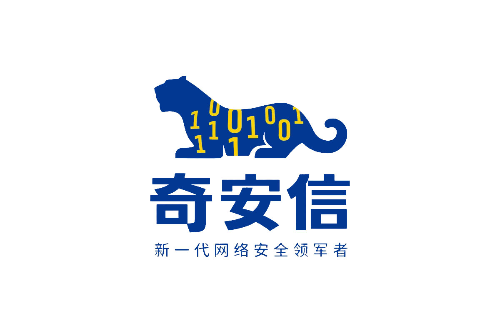

Qi-AnXin Technology Group Inc. (奇安信)
July 2024 – August 2024 · Hangzhou, China
Security Services Intern
- Conducted vulnerability assessments and reported 10+ critical issues, including username enumeration, SMS bombing, and sensitive file leakage.
- Took part in 3 external penetration tests for enterprises and provincial departments, delivering detailed reports and recommended mitigations.
Burp Suite
Dirsearch
CKnife
Kali
SQL
PHP
AWVS
OWASP Top 10